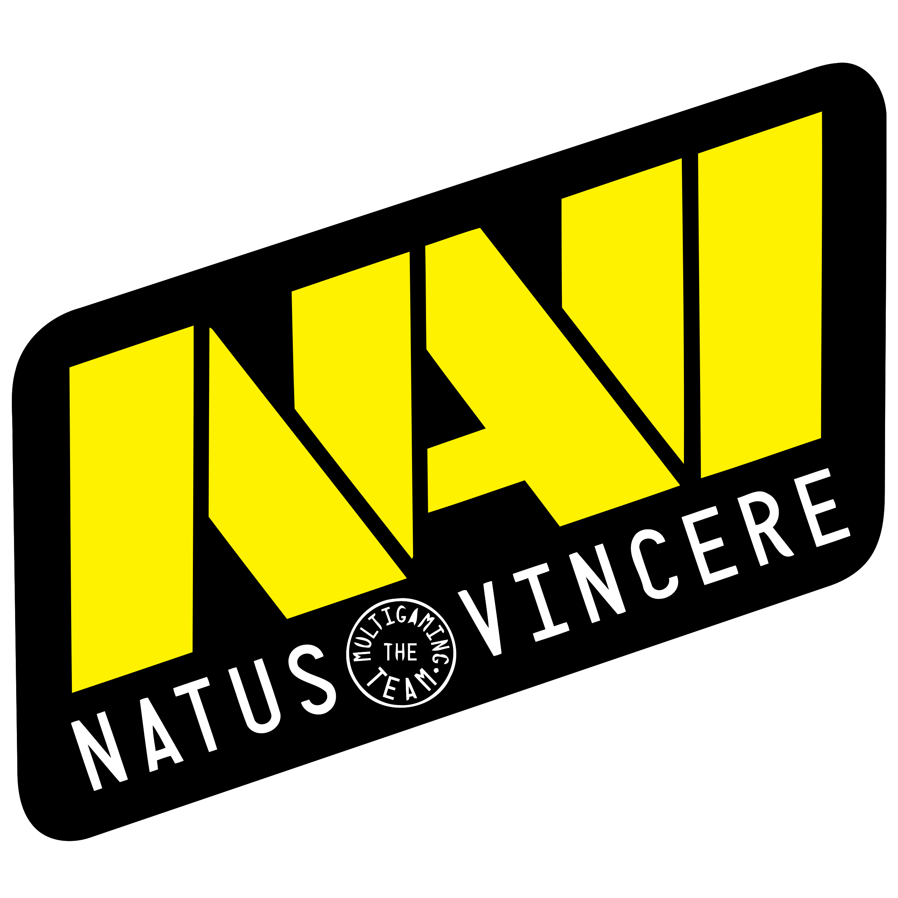

Natus Vincere 
Counter-Strike 1.6
История
Создание команды
Команда была основана 17 декабря 2009 года. После распада украинского проекта KerchNET, поддержку бывшим игрокам команды оказал известный меценат и организатор киберспортивных турниров Мурат «Арбалет» Жумашевич. Новая команда получила название «Arbalet.UA». В её состав вошли харьковчане Даниил «Zeus» Тесленко и Иван «Edward» Сухарёв, киевлянин Сергей «starix» Ищук, Арсений «Ceh9» Триноженко из Львова и Егор «markeloff» Маркелов из Днепра. Менеджером команды стал Александр «ZeroGravity» Кохановский из Киева.
31 января 2010 года Arbalet.UA побеждает в турнире Arbalet Cup Asia 2010, дважды обыграв китайцев из TyLoo и в финале взяв верх над ForZe 16:5 (inferno).
В феврале был объявлен конкурс на лучшее название команды. К тому времени этот состав выступал под клантегами «Arbalet.UA», а также «Na`Vi». Голосование проходило на сайте hltv.org, где было оставлено более 2000 комментариев. Победителем стал португалец Bruno «hArt1k» Estevens, предложивший название «Team Vincit», производным от которого стало финальное название «Natus Vincere» (с лат.«рожденные побеждать»), позволившее оставить тег без изменений — «Na`Vi».
Победа на Intel Extreme Masters 4
6 марта 2010 года Natus Vincere становится чемпионом мира и зарабатывает $50 000, победив в гранд-финале четвёртого сезона Intel Extreme Masters шведскую команду Fnatic: 16:13 (train), 16:14 (inferno). Интересно, что первые матчи квалификации начались ещё в сентябре 2009 года, и команда играла под другим названием (KerchNET) и с другими игроками, из которых в состав чемпионов мира входил лишь starix.
 В апреле 2010 года в новом игровом центре «Киев Киберспорт Арена» в Киеве состоялся шоу-турнир с участием команд Na`Vi, Fnatic, SK Gaming и UNITED. Каждая из команд играла с каждой на пяти картах. Турнир прошёл в течение трёх игровых дней, а победа и приз 12 000$ достались украинцам из Na`Vi
В апреле 2010 года в новом игровом центре «Киев Киберспорт Арена» в Киеве состоялся шоу-турнир с участием команд Na`Vi, Fnatic, SK Gaming и UNITED. Каждая из команд играла с каждой на пяти картах. Турнир прошёл в течение трёх игровых дней, а победа и приз 12 000$ достались украинцам из Na`Vi
Победа на ESWC 2010
После неудачного выступления на Arbalet Cup СНГ 2010 (4 место) команда решает пропустить следующий крупный турнир ASUS Winter 2010, чтобы подготовиться к Arbalet Cup и украинским отборочным ESWC. Тем не менее, в середине мая 2010 года Na`Vi успевают занять второе место в престижном турнире Arbalet Cup Europe 2010 (Стокгольм), проиграв в финале Fnatic и заработав $10 000 призовых. В конце концов, Na`Vi побеждают в ESWC Ukraine.
 В финальной части ESWC команда попала в наивысший посев наряду с SK Gaming, Fnatic и mTw.dk. 4 июля 2010 года Natus Vincere добилась лучшего достижения в истории украинского киберспорта, став победителем чемпионата мира по версии ESWC (чего ранее не удавалось ни одной команде СНГ), разгромив в финале SK Gaming: 16:5 (train) и 16:4 (inferno). По ходу турнира, команда, лишь благодаря везению, вышла из группы, но сумела обыграть в плей-офф Fnatic и mTw.dk.
После победы в чемпионате мира Natus Vincere анонсировали участие в двух турнирах Arbalet Cup Dallas (Даллас) и GameGune 2010 (Бильбао). 18 июля 2010 года Na`Vi побеждают в турнире Arbalet Cup Dallas, обыграв в финальном матче Mousesports: 19:15 (dust2), 16:12 (inferno). После получения полагающихся победителю $25 000 команда выходит на первое место по количеству призовых, заработанных европейскими коллективами за год. На следующих турнирах команда занимает третьи места: GameGune 2010 и Extreme Masters - Shanghai
В финальной части ESWC команда попала в наивысший посев наряду с SK Gaming, Fnatic и mTw.dk. 4 июля 2010 года Natus Vincere добилась лучшего достижения в истории украинского киберспорта, став победителем чемпионата мира по версии ESWC (чего ранее не удавалось ни одной команде СНГ), разгромив в финале SK Gaming: 16:5 (train) и 16:4 (inferno). По ходу турнира, команда, лишь благодаря везению, вышла из группы, но сумела обыграть в плей-офф Fnatic и mTw.dk.
После победы в чемпионате мира Natus Vincere анонсировали участие в двух турнирах Arbalet Cup Dallas (Даллас) и GameGune 2010 (Бильбао). 18 июля 2010 года Na`Vi побеждают в турнире Arbalet Cup Dallas, обыграв в финальном матче Mousesports: 19:15 (dust2), 16:12 (inferno). После получения полагающихся победителю $25 000 команда выходит на первое место по количеству призовых, заработанных европейскими коллективами за год. На следующих турнирах команда занимает третьи места: GameGune 2010 и Extreme Masters - Shanghai
Победа на World Cyber Games 2010
15 августа Na`Vi выигрывают украинские отборочные на World Cyber Games и получают оплаченную путёвку на финальную часть, проходящую в Лос-Анджелесе с 30 сентября по 3 октября 2010 года.
 Следующим турниром для Natus Vincere становится ASUS Summer 2010, на который команда получила прямое приглашение. Турнир стал первым из серии ASUS Open, проводящимся за пределами России, в киевском игровом центре «Киев Киберспорт Арена». В полуфинале Na`Vi проигрывают казахской команде k23, и в итоге занимают третье место.
4 октября 2010 года Natus Vincere становятся чемпионами мира по версии World Cyber Games, обыграв в напряжённом финале датскую команду mTw.dk. Эта победа делает Na`Vi первой командой в мире, которой удалось завоевать сразу три самых престижных чемпионских титула (IEM, ESWC, WCG) за один год. В конце октября 2010 года комментатор ESL TV Бакр «KinGSaicx» Фадль заявил, что SK Gaming собираются пригласить на место своего шведского состава украинскую команду, однако менеджер Natus Vincere опроверг информацию о переходе.
В начале ноября 2010 года Natus Vincere принимают участие в турнире World e-Sports Masters (WEM 2010), ежегодно собирающем лучшие команды со всего мира в китайском городе Ханчжоу. Среди восьми участников турнира Na`Vi занимают четвёртое место, завоевав 7 500$
Следующим турниром для Natus Vincere становится ASUS Summer 2010, на который команда получила прямое приглашение. Турнир стал первым из серии ASUS Open, проводящимся за пределами России, в киевском игровом центре «Киев Киберспорт Арена». В полуфинале Na`Vi проигрывают казахской команде k23, и в итоге занимают третье место.
4 октября 2010 года Natus Vincere становятся чемпионами мира по версии World Cyber Games, обыграв в напряжённом финале датскую команду mTw.dk. Эта победа делает Na`Vi первой командой в мире, которой удалось завоевать сразу три самых престижных чемпионских титула (IEM, ESWC, WCG) за один год. В конце октября 2010 года комментатор ESL TV Бакр «KinGSaicx» Фадль заявил, что SK Gaming собираются пригласить на место своего шведского состава украинскую команду, однако менеджер Natus Vincere опроверг информацию о переходе.
В начале ноября 2010 года Natus Vincere принимают участие в турнире World e-Sports Masters (WEM 2010), ежегодно собирающем лучшие команды со всего мира в китайском городе Ханчжоу. Среди восьми участников турнира Na`Vi занимают четвёртое место, завоевав 7 500$
Победа на DreamHack Winter 2010
 С 25 по 27 ноября 2010 года в шведском городе Йёнчёпинг прошла одна из крупнейших европейских LAN party DreamHack Winter 2010. Для участия в турнире по Counter-Strike Natus Vincere пришлось пропустить совпадающий по срокам проведения крупнейший российский турнир ASUS Autumn 2010. После выхода в плей-офф Na`Vi последовательно обыграли команды puta, fnatic и Frag eXecutors, а в финале не оставили шансов датчанам из mTw.dk, став победителями турнира. За четыре матча плей-офф украинцы проиграли лишь один «тайм» — команде fnatic на появившейся впервые карте de_mirage. Сергей Ищук («Starix») был признан лучшим игроком турнира.
После победы в этом турнире команда установила очередной рекорд, заработав за год $220 000 (по другим данным — чуть более $215 000). Предыдущее достижение принадлежало шведскому коллективу fnatic, заработавшему в 2009 году $189 000 (до них лучшими были также шведы из SK Gaming — $183 000 в 2003 году)
С 25 по 27 ноября 2010 года в шведском городе Йёнчёпинг прошла одна из крупнейших европейских LAN party DreamHack Winter 2010. Для участия в турнире по Counter-Strike Natus Vincere пришлось пропустить совпадающий по срокам проведения крупнейший российский турнир ASUS Autumn 2010. После выхода в плей-офф Na`Vi последовательно обыграли команды puta, fnatic и Frag eXecutors, а в финале не оставили шансов датчанам из mTw.dk, став победителями турнира. За четыре матча плей-офф украинцы проиграли лишь один «тайм» — команде fnatic на появившейся впервые карте de_mirage. Сергей Ищук («Starix») был признан лучшим игроком турнира.
После победы в этом турнире команда установила очередной рекорд, заработав за год $220 000 (по другим данным — чуть более $215 000). Предыдущее достижение принадлежало шведскому коллективу fnatic, заработавшему в 2009 году $189 000 (до них лучшими были также шведы из SK Gaming — $183 000 в 2003 году)
Победа на Intel Extreme Masters 5
5 марта 2011 года в Ганновере Natus Vincere отстаивает титул чемпионов мира по версии Intel Extreme Masters и зарабатывает $35 000, победив в гранд-финале польскую команду Frag eXecutors: 16:12 (train), 16:10 (dust2). Из выигрыша команды было вычтено $4 550 (13 % от общей суммы) в качестве штрафа за нарушение правил.
Состав команды
В период игры Counter-Strike версии 1.6 состав команды ни разу не менялся. Свою роль поменял менеджер Александр «ZeroGravity» Кохановский, а его место занял Игорь «caff» Сидоренко. В конце 2012 года все игроки перешли в новую тогда дисциплину — Counter-Strike: Global Offensive.
| Ник | Полное имя |
 | Zeus | Даниил Тесленко |
| ceh9 | Арсений Триноженко |
| Edward | Иоанн Сухарёв |
| starix | Сергей Ищук |
| markeloff | Егор Маркелов |